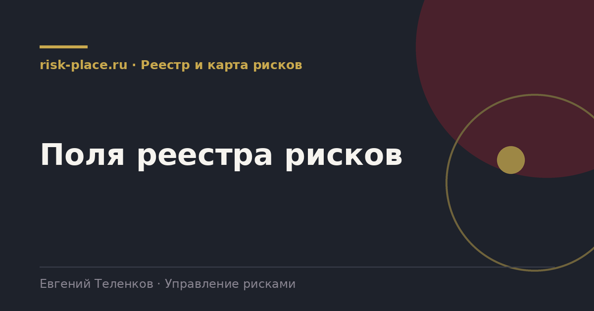

Главная · Библиотека · Реестр и карта рисков · Поля реестра рисков
Библиотека · Реестр и карта рисков
Реестр это не таблица описаний, а рабочая база. От состава полей зависит, соберется ли из нее отчет руководству и дашборд.

Без любого из них где-то ломается отчетность.
| Поле | Зачем нужно |
|---|---|
| Идентификатор | Сквозной номер, по нему риск живет годами и связывается с мероприятиями |
| Формулировка | Событие, причина, последствие в одном предложении |
| Категория | Позволяет агрегировать и сравнивать по портфелю |
| Процесс или объект | Привязка к деятельности, без нее риск висит в воздухе |
| Цель, на которую влияет | Основание для приоритета |
| Владелец | Руководитель, отвечающий за управление, не исполнитель |
| Вероятность до мер | Оценка по утвержденной шкале |
| Влияние до мер | Оценка по утвержденной шкале, желательно в деньгах |
| Уровень до мер | Произведение или матричная зона |
| Существующие меры | Что уже работает, иначе оценка «до мер» бессмысленна |
| Стратегия реагирования | Избежать, снизить, передать, принять |
| Уровень после мер | Остаточный риск, то, с чем компания живет |
| Дата оценки | Без нее невозможно показать динамику |
| Статус | Активен, закрыт, реализовался, объединен |
Когда базовый реестр устоялся, эти поля дают качественный скачок отчетности.
Каждое из них выглядит логично и при этом почти всегда остается пустым или заполняется формально.
Каждое поле должно быть либо входом для расчета, либо основанием для решения, либо обязательным по требованию извне. Поле, которое не проходит ни один из трех тестов, надо убирать. Оно не бесплатное, за него платят временем владельцев рисков при каждом пересмотре.
И еще одно. Реестр должен быть один. Если у компании есть корпоративный реестр, реестр проектов и реестр охраны труда, они должны иметь общий справочник категорий и общие шкалы, иначе агрегировать их не получится никогда.
Частые вопросы
Одна форма для любого вопроса
Расскажем о ближайших датах, предложим формат под ваш состав участников и назовем порядок бюджета.
Предпочитаете почту — напишите на info@risk-place.ru. Адрес: Москва, улица Скаковая, 32с2.
 risk-
risk-